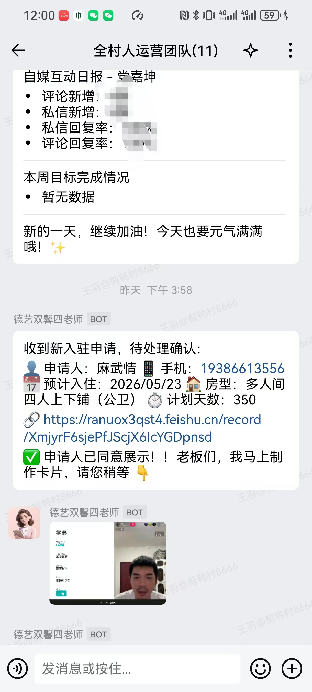
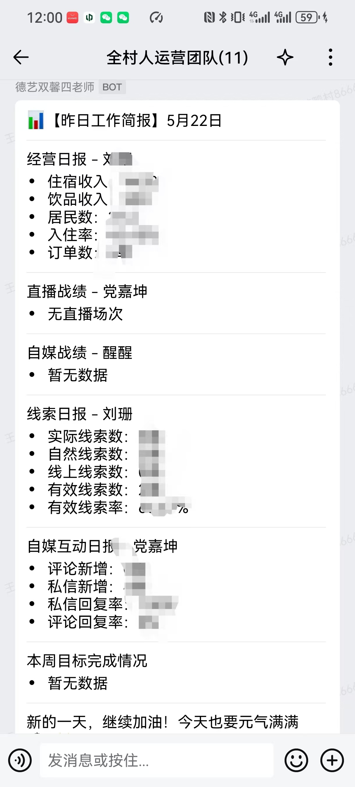
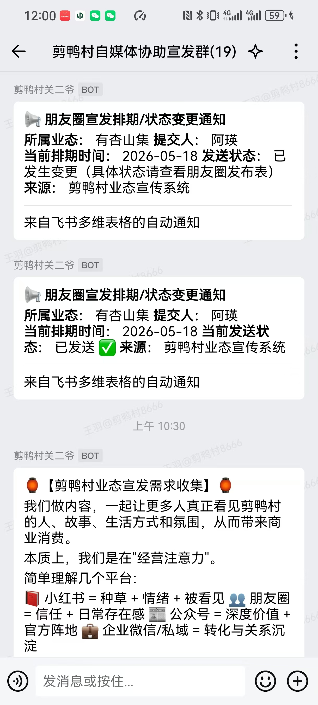
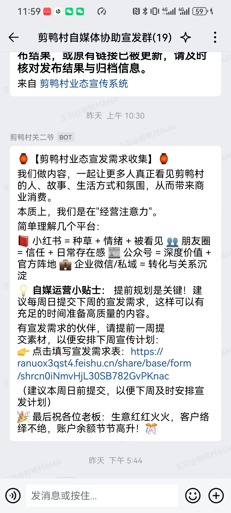
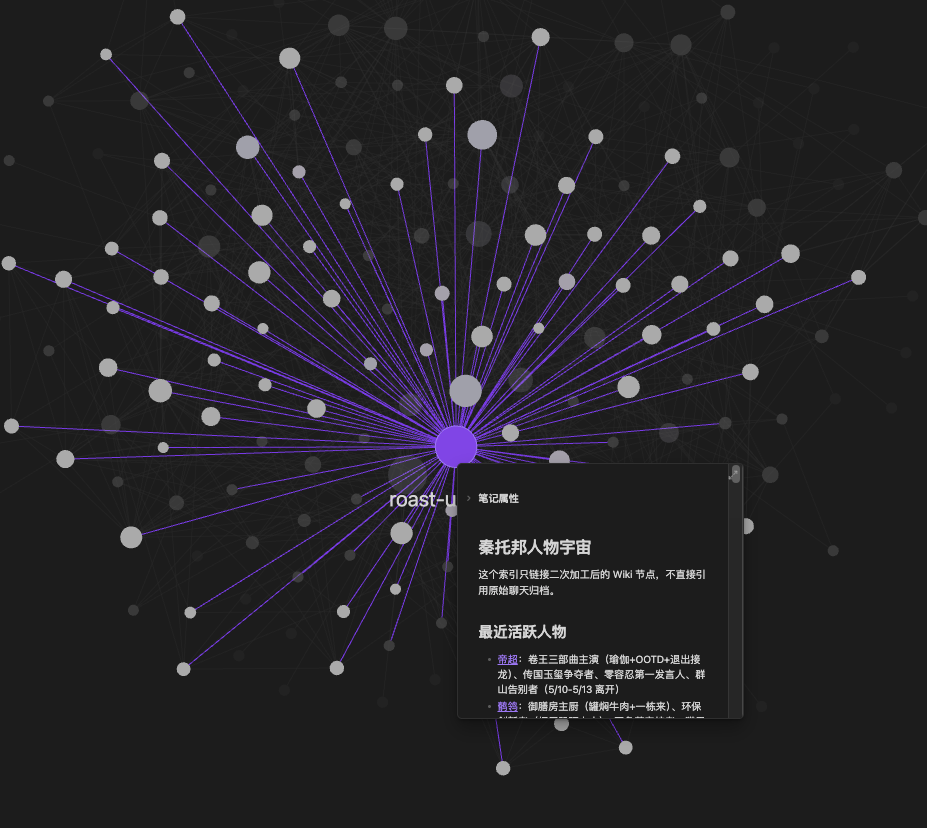
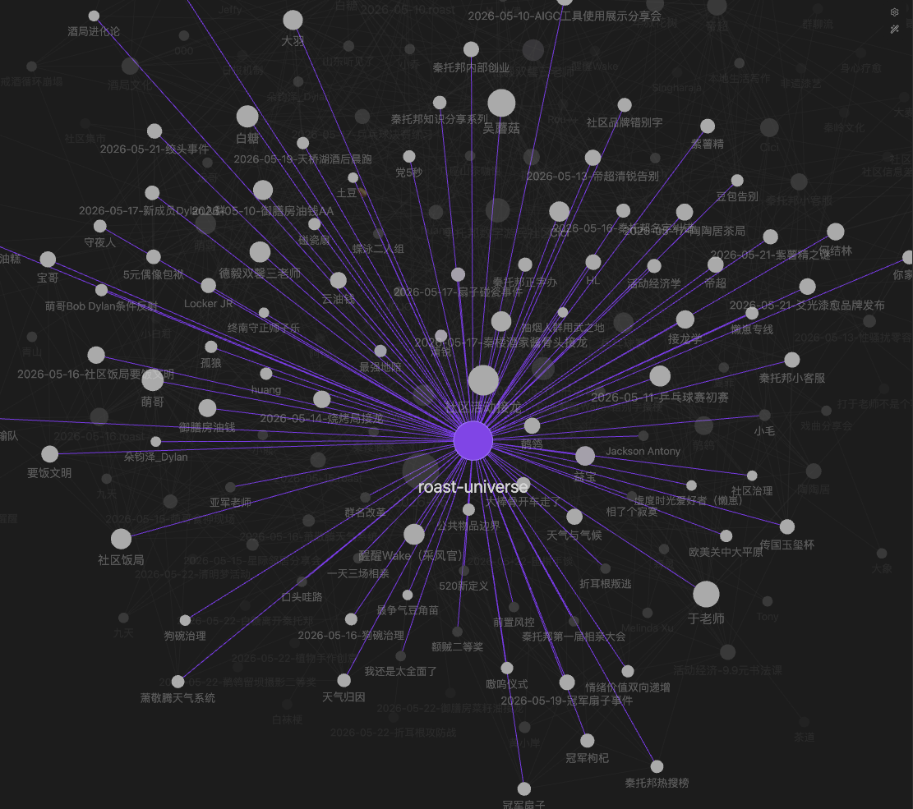
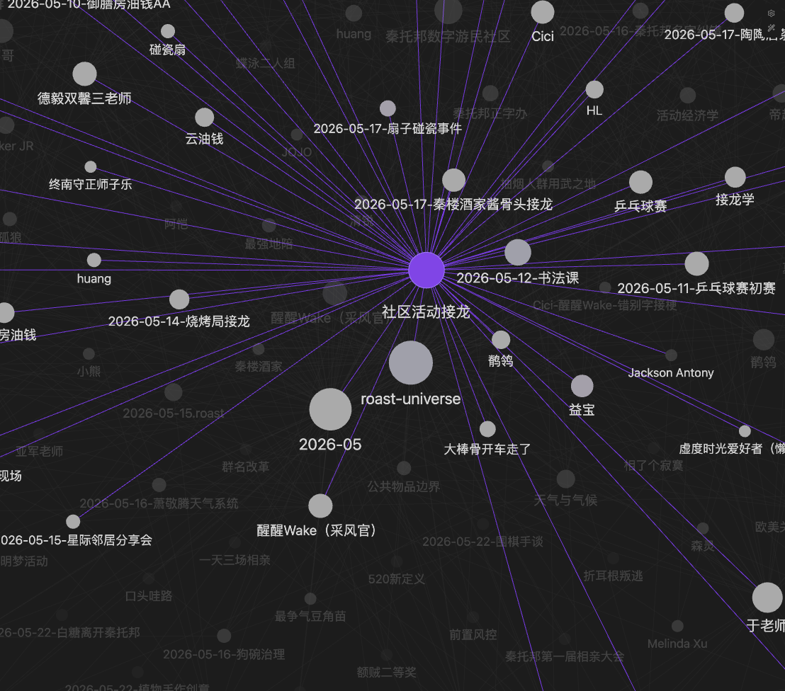
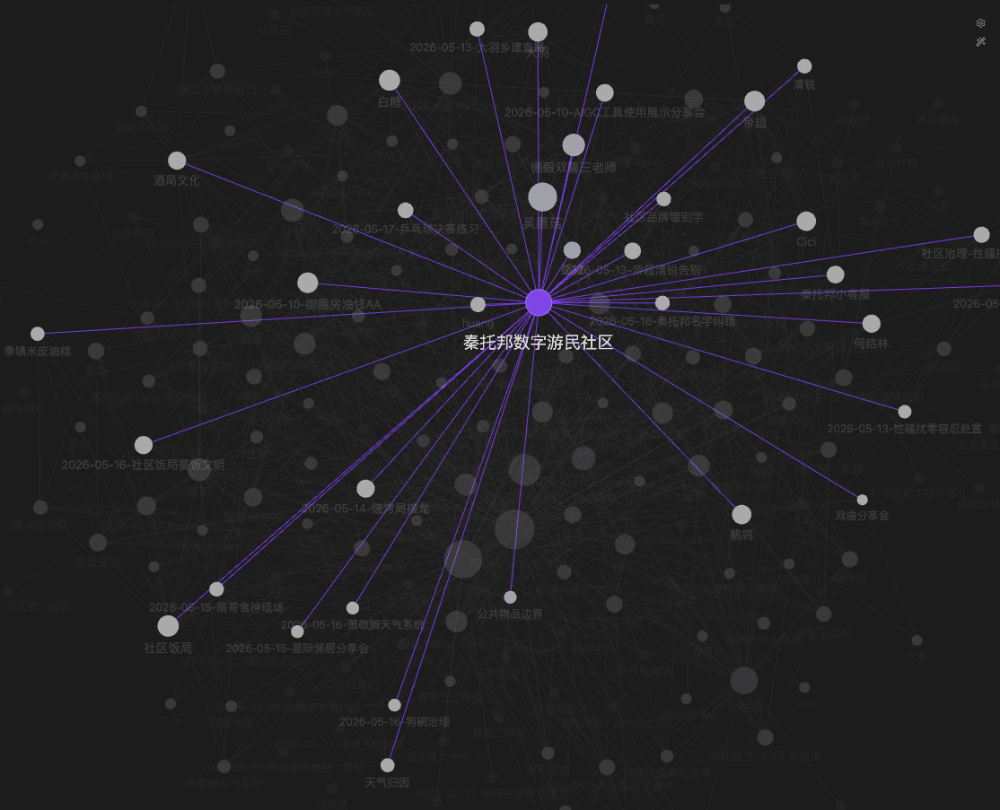

真实实践分享 / 终版演讲网页
从热情驱动到智能体驱动的乡村运营
不是讲“AI 有多先进”。
而是讲一个真实乡村社区，如何用系统，接住那些过去只能靠人硬撑的事。
人提供生命力。

乡村运营为什么越来越难？
乡村的问题，从来不只是缺人。
而是一个高度依赖“人状态”的系统，如何长期稳定运行。
- 微信群越来越碎
- 表格越来越多
- 深夜还在回复消息
- 人员流动带来信息断层
- 活动现场永远靠经验硬撑
我们为什么开始尝试 AI？
不是因为“AI 很先进”。
而是因为运营太碎、太累、太容易断，太依赖人硬撑。
AI 解决不了
- 社区关系
- 价值观
- 人与人的信任
- 真实生活体验
- 长期主义本身
我们不神化 AI
它并不万能，甚至很多时候很笨、很不稳定，也经常出错。
但它确实开始帮我们降低损耗、提高连续性、保留组织记忆。
- 降低损耗
- 提高连续性
- 提高协同效率
- 保留组织记忆
这场分享真正要讲的，不是工具，而是组织方式
我们真正有价值的地方，不是“用了哪些 AI 工具”。
而是第一次意识到：
AI 正在重新定义乡村运营的组织方式。
它让一个原本只能靠人硬撑的系统，开始有机会被系统化、被记忆、被协同、被持续运转。
乡村运营，本质上是一个高损耗系统
社区、商业、内容、接待、活动、居住规则彼此缠绕，没有单一线性流程。
运营不是机械执行，而是大量关系维护、判断协调与日常回应。
信息分散、角色交叉、平台碎片化，导致每次协同都要重新对齐。
人会轮换、会休息、会离开，组织经验很容易跟着个体一起流失。
很多任务都发生在真实生活里，很难直接照搬企业 SOP。
青年有热情，但乡村需要稳定性
这是秦托邦与剪鸭村很真实的矛盾。
热情能点燃现场，但真正的运营，要求的是连续性、稳定性、长期协同。
乡村最难的，不是没有热情。
而是热情之后，系统能不能继续运转。
AI 保证稳定性，人提供生命力
AI
负责稳定性Human
负责生命力AI 不是工具，而是乡村的新基础设施
过去乡村依赖水、电、路、网络。
未来乡村会新增一层 AI 协同基础设施，支撑日常运营的持续运转。
Agent 小龙虾
它不是一个聊天机器人。
它更像一个“乡村协同运营助理”，开始进入真实流程，接住那些过去只能靠人记着、盯着、催着的小环节。
- 社区服务：接收入住申请并推动后续处理
- 对内管理：自动汇总经营与运营日报
- 村内商业自媒体服务：宣发排期、状态通知、需求收集
这里最重要的，不是某个机器人会不会聊天。
而是它已经开始进入真实运营流程，接住那些过去只能靠人记着、盯着、催着、补位的小事务。
它不提供社区的生命力，
但它开始提供一种以前很稀缺的东西：稳定性。
小龙虾智能体的 4 个真实案例截图




没有数据中台，AI 就无法真正进入乡村运营
现在很多人还停留在“用 ChatGPT 写文案”。
但真正进入运营，需要数据采集、结构化、流转、触发、反馈与长期留存。
数据治理不是技术问题，而是组织问题
标准化
字段怎么命名，状态怎么定义，信息如何沉淀，决定了后续所有协同是否可复用。
权限
谁能看，谁能改，谁负责校验，决定了数据是否可信，也决定了协同能否稳定。
透明与统一
信息结构统一之后，团队理解才会一致，自动化才不会反复断裂。
AI 的核心，不是模型。
而是数据治理能力。
数据的获取，本身就是组织要解决的问题
很多时候，问题不是 AI 不够聪明。
而是组织有没有形成稳定的数据获取习惯，能不能把日常工作及时沉淀下来。
这不是一张“工具截图”，而是一种工作习惯的证据： 愿不愿意记录、有没有入口、能不能持续收集，决定了后面是否有数据可治理。
AI 第一次让乡村具备复杂运营能力
过去，复杂协同只属于大公司、大平台、大城市组织。
现在，一个几十人的乡村社区，也开始拥有自己的复杂能力层。
看见每天发生了什么，而不是靠印象和回忆管理社区。
把提醒、跟进、触发、状态流转变成可持续的系统动作。
让人离开岗位时，信息和流程不至于一起消失。
让社区内容、商业宣发、自媒体协同不再只靠个人硬扛。
把方法、经验、踩坑与判断逐渐沉淀成社区的长期记忆。
社区开始拥有长期记忆
这是我们最在意的变化之一。
过去很多经验存在某个人脑子里，现在开始沉淀到知识库、检索系统、流程记录里。
- Obsidian
- 知识库
- AI 检索
- 运营方法沉淀
- 社区经验留存
人物宇宙
当数据开始被连接，组织不再只看到零散记录，而是开始看到一个社区的人物关系与长期脉络。

人&事网络
数据被整理之后，人与事件之间的联系开始变得可见，这让经验不再只存在于个别人脑子里。

人&事网络 2
同一批数据在不同整理方式下，会呈现出不同的结构视角，也帮助我们重新理解社区协同。

事件网络
当事件之间建立关联，组织开始拥有更接近“系统视角”的能力，而不只是单点处理问题。

数据被处理以后，价值才开始显现
原始信息并不自动等于组织能力。
只有当录音、文本、关系、事件被处理、整理、连接之后，它们才会开始反过来服务运营。
这个播放页不是为了展示“有个音频文件”。
而是为了展示：当原始语音被保存下来，它就有机会进一步被转写、摘要、结构化，并进入社区的长期记忆系统。
我们踩过的坑
工具太多
系统越多，维护点越多，协同成本不一定立刻下降。
自动化会断
接口、权限、字段变化，都会让原本看起来顺滑的流程突然失灵。
结构会乱
数据结构一开始不统一，后面补救的成本会越来越高。
输出不稳定
AI 有时非常聪明，有时又会一本正经地出错。
理解不一致
同一个“自动化”，不同人理解的边界和期待完全不同。
高估 AI
很多人容易把模型能力，误以为是系统能力和组织能力。
低估运营
真正难的不是调用 AI，而是梳理清楚真实运营流程。
持续迭代
这件事没有“一次搭好”，只能边做边错边迭代。
AI 解决不了乡村所有问题
它无法替代人，无法创造真实社区，也无法替代长期主义。
但它能让人没那么容易被耗尽。
- 无法替代真实关系
- 无法替代在地经验
- 无法替代价值判断
- 无法自动生成共同体
未来乡村可能是什么样？
不是赛博朋克。
而是自然中的协同文明。
一个几十人的乡村社区，
也开始拥有复杂协同能力。
这是非常重要的变化。过去这类能力只属于大公司、大平台、大城市组织。
我们并不确定，AI 会不会真正改变乡村。
但我们很确定：
如果没有新的协同方式，乡村运营会越来越难。
而 AI，也许正在成为那个新的开始。
点击左右两侧、方向键、空格键、滚轮都可以翻页。
欢迎继续交流，一起把乡村运营做得更稳一点
如果你也在做乡村社区、青年空间、在地商业、内容协同，
或者也在思考 AI 如何真正进入真实运营，欢迎加我企业微信继续交流。
也欢迎之后直接查看秦托邦官网，持续关注我们的实践更新。
扫码添加企业微信
后续继续交流 AI 协同运营与乡村实践